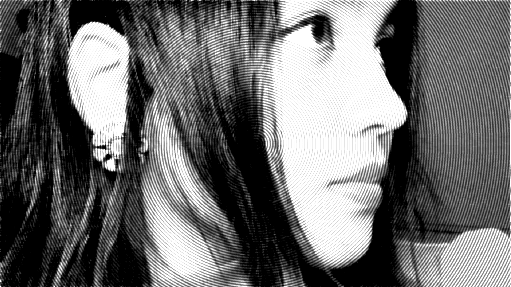

ABOUT
Fueled by a passion for the intersection of art, science, design, and technology, I am dedicated to creating transformative innovations that shape the future and make a positive impact on humanity.
SKILLSET
HTML | CSS | JavaScript | Python | SQL | AI/ML | HCI / Interaction Design | Adobe Creative Suite | Video Editing | Digital Photography | Branding | Leadership | Event Organisation | Touch Designer | Collaboration
Experience
Social Media and Events Photography
Created content for the school’s social media, covering events such as Open House, Orientation, and external events like Walk for Rice, Purple Parade, and others.
Served as the designated events photographer and editor, capturing and editing media for both school and external events.
Exhibition Design | National Gallery Singapore
Contributed to the exhibition design and installation for Form Flux Futures by LASALLE at the National Design Centre, Singapore by assisting with spatial design, painting plinths, and overall setup.
My essay titled Artificial Parasociality: Exploring the Role of Intersubjectivity in Interactions with AI Chatbots was featured in this exhibition.
Open To
Interaction Design | UI/UX Design | Product management | branding | Photography | Programming | AI/ML
Education
BFA Communication Design | 2025
Parsons School of Design - The New School
𝟭/𝟭𝟲 Exchange Students to The New School
𝟭/𝟮 BFA Communication Design Exchange Students under Parsons School of Design Worldwide
BA (Hons) Design Communication | 2023-2026
LASALLE College of the Arts Degree Conferred by Goldsmiths College, University of London
President of Orientation for Bachelors Cohort
Student Ambassador
LASALLE Events Photographer
Social Media Core Team Member
Frequent Student Volunteer
𝟱.𝟬/𝟱.𝟬 𝗚𝗣𝗔
How To Grow Almost Anything 2025 | 2025
Massachusetts Institute of Technology + Harvard University
Synthetic Biology Bootcamp | Biofabrication and Imaging | Genome Engineering | Hands-on applications in designing, visualizing, and manipulating biological systems
CBSE GRADE 11 - 12 | 2021-2023
R.N Podar School, Mumbai
Grade 11 Class President
Head of Cultural Club
Co-Head of Ubuntu (English & Life Club)
Leader of School Mural Project
Founder and Pianist of the Music Club
Chief Editor and Content Creator for School Social Media
CBSE GRADE 3 - 10 | 2013-2021
Podar International School Mumbai + DPS Gurgaon
School Editor and Content Creator for Social Media
AIR 12 out of 5,000+ in National Creativity Olympiad (India) 2018
Scholar Student with Consistent 10/10 CGPA
Student Council Prefect – Served as 1 of 12 prefects in a cohort of 500+ students (Grade 6-8)
Top 3 Student of the Cohort
99% in Preboard Examinations (Grade 10)
100/100 in Mathematics, Social Science, and Computer Science (Grade 9)
School Rank 3 out of 500+ in the Scholarship Aptitude Test for Study Vault
50% Scholarship on Annual Tuition Fees (Middle School)
Zonal Gold Medalist (SOF IEO)
State-Level Gold Medal of Distinction (SOF IMO)
99th+ Percentile in ASSET
Band 8-9/9 in ACER
144/150 in Cambridge Key English Test
Gold Medalist in French Olympiads (Consecutive Years)
Consistently Top 1,000–2,000 Rank out of 10 Million Applicants in NSTSE
AIR 1 in Physics + Chemistry (NSTSE 2018)
Core Art Team Member – Represented school in inter-school art competitions, securing multiple wins, and contributed to intra-school events
Choir Member – First-row vocalist and pianist, performing at school events
Interests
Artificial Intelligence | Machine Learning | Investing | Cryptocurrency | Interaction Design | Web3 | Physical Computation | Robotics | Programming | Design Thinking | Art | Science | Creative Coding | Technology | Innovation